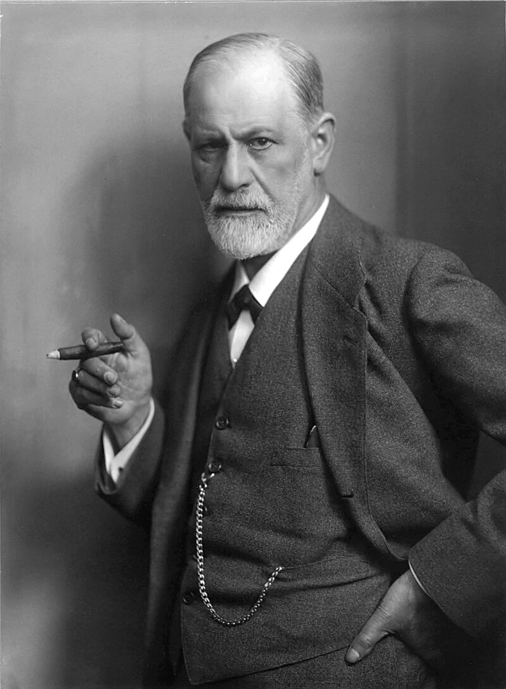

Sigmund Freud
about

Sigmund Freud (1856 - 1939) was an Austrian neurologist and the founder of psychoanalysis, a clinical method for evaluating and treating pathologies seen as originating from conflicts in the psyche, through dialogue between patient and psychoanalyst, and the distinctive theory of mind and human agency derived from it.